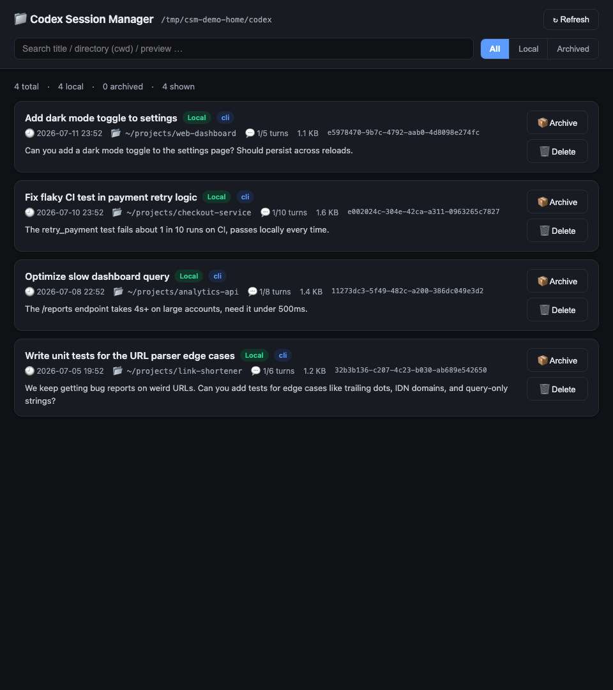
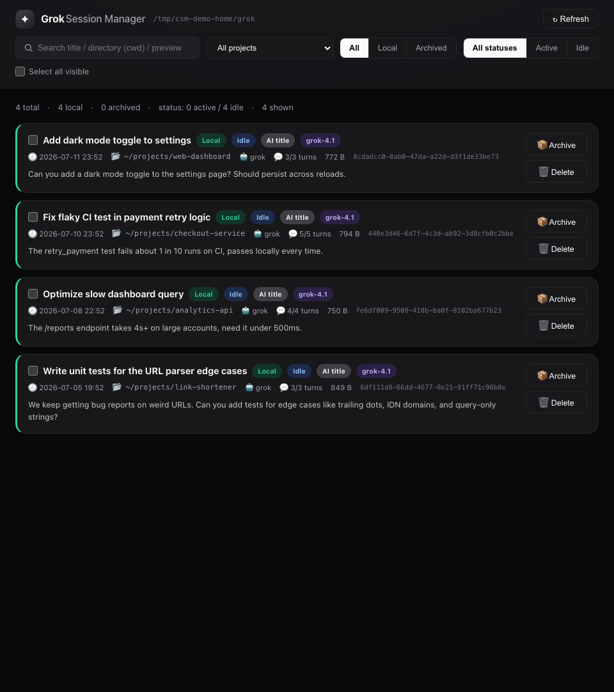

Find the right session
Search titles, folders, paths, and preview text across local records.
LOCAL-FIRST · NATIVE macOS · REAL UI
Three focused macOS apps to browse, search, archive, restore, and safely delete sessions from Codex, Claude Code, and Grok — without moving conversations into another cloud service.
macOS 13+ · Apple Silicon + Intel · Python 3.9+ required
REAL UI · LIVE CAPTURE
The full workflow in 20 seconds, using isolated fictional data.
A SMALL TOOL FOR A REAL PROBLEM
Search titles, folders, paths, and preview text across local records.
Narrow results by project, source, archive state, and activity status.
Select multiple records and archive or restore them together.
A local backup is created before the original is removed.
Running Codex and Claude Code sessions show clear conflict warnings.
Codex, Claude Code, and Grok remain three independent lightweight apps.
THREE PROVIDERS · ONE CONSISTENT WORKFLOW

Official CLI actions, archive support, and live-session detection.
Local transcript browsing with source filters and safe file moves.

Active and idle session states with directory-based archive actions.
LOCAL BY DESIGN
There is no account system, analytics, telemetry, cloud database, CDN, or outbound runtime request. The apps read the formats already stored on your Mac and bind only to a random loopback port.
Read the privacy model ↗Loopback-only local service
External WebKit navigation blocked
Read-only search, filters, and refresh
Explicit actions for every file change
OPEN SOURCE · MIT LICENSED
Download the Universal 2 package, install only the apps you use, and keep every conversation on your Mac.